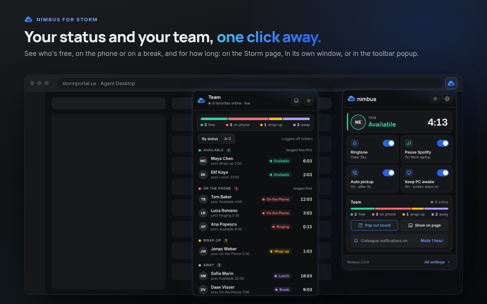
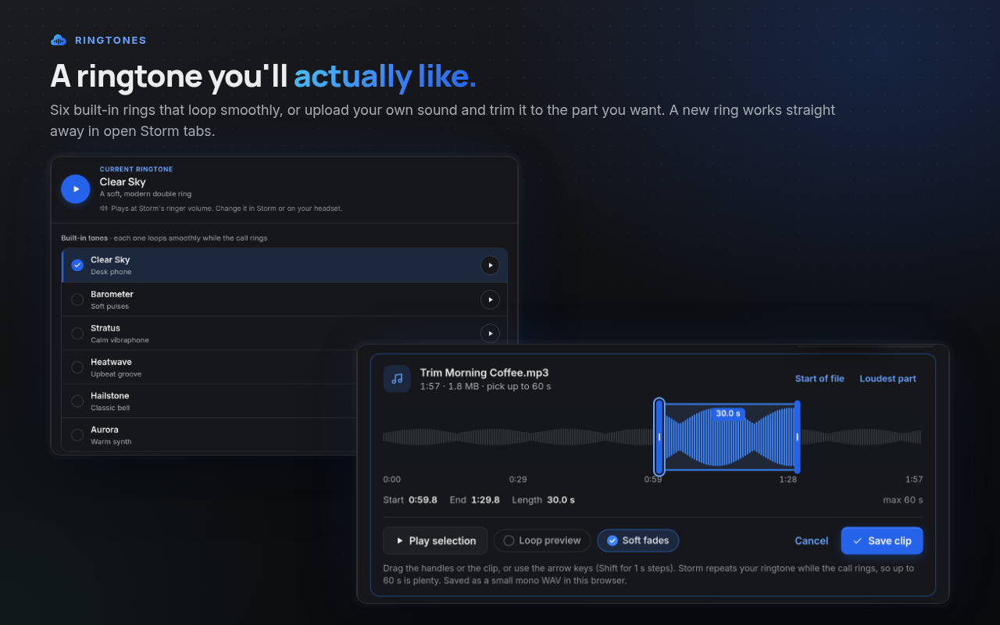
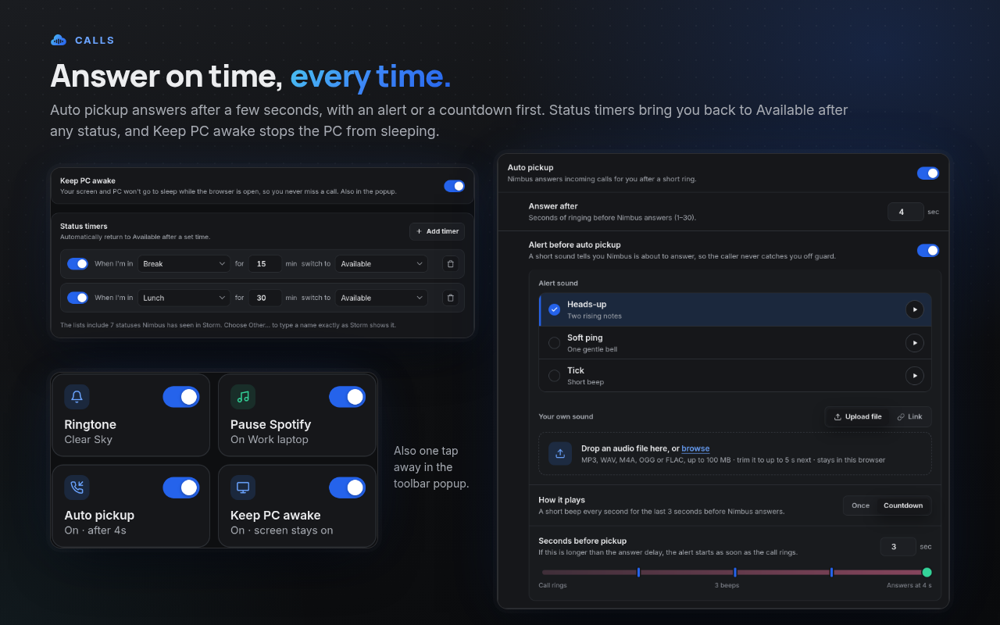
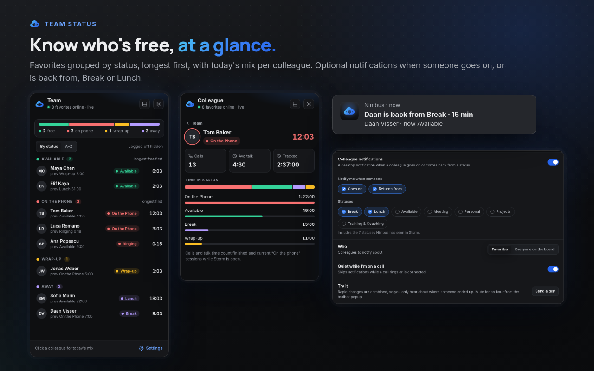
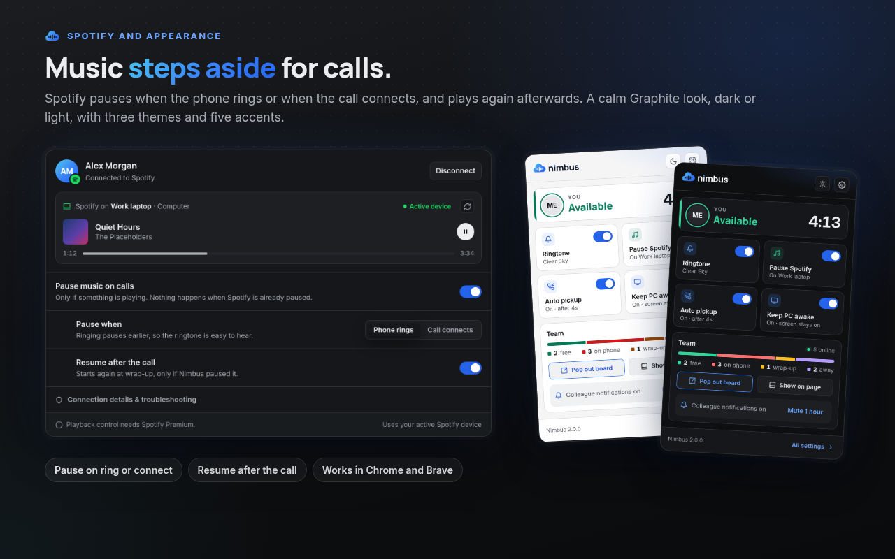

Chrome extension for Storm Agent Desktop
Calls in. Music out.
Nimbus is a calm co-pilot for Storm by Content Guru: your own ringtone, your team at a glance, auto pickup and Spotify that pauses for calls.

Ringtones
A ringtone you'll actually like.
Six built-in tones, or your own: upload an audio file or paste a link, then trim it to the part you want to hear. A new ringtone applies straight away in open Storm tabs.

Calls
Answer on time, every time.
Auto pickup answers after 1 to 30 seconds, with a short alert or a countdown first. Status timers bring you back to Available after Break, Lunch or any other status, and Keep PC awake stops the PC from sleeping.

Team status
Know who's free, at a glance.
A team board grouped by status with a summary bar, in its own window or on the Storm page. Optional notifications tell you when a colleague is available again.

Spotify and appearance
Music steps aside for calls.
Spotify pauses when the phone rings or when the call connects, and plays again afterwards. A calm Graphite look in dark or light, with five accent colours.

Read the privacy policy for the details, or get help on the support page.
Nimbus in het Nederlands
Chrome-extensie voor Storm Agent Desktop
Nimbus is een rustige co-piloot voor Storm van Content Guru: je eigen beltoon, je team in één oogopslag, automatisch opnemen en Spotify die pauzeert bij gesprekken.
Beltonen
Zes ingebouwde tonen, of je eigen: upload een audiobestand of plak een link en knip het bij tot het stuk dat je wilt horen. Een nieuwe beltoon werkt meteen in geopende Storm-tabbladen.
Gesprekken
Automatisch opnemen na 1 tot 30 seconden, met eerst een korte melding of een aftelling. Statustimers zetten je terug naar Beschikbaar na Pauze, Lunch of een andere status, en PC wakker houden voorkomt slaapstand.
Teamstatus
Een teambord gegroepeerd per status met een overzichtsbalk, in een eigen venster of op de Storm-pagina. Optionele meldingen laten weten wanneer een collega weer beschikbaar is.
Spotify en uiterlijk
Spotify pauzeert als de telefoon overgaat of als het gesprek verbonden is, en speelt daarna verder. Een rustige Graphite-stijl in donker of licht, met vijf accentkleuren.